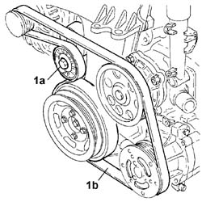
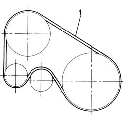
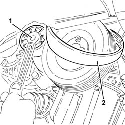
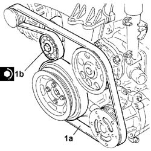
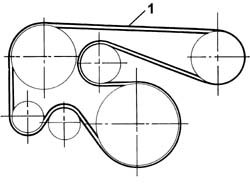
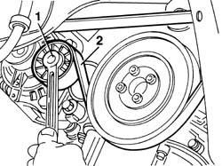

1092G10 single engine belt r r
- Path
- Procedures > 10 ENGINE > 1092 ENGINE COMPONENT MISCELLANEOUS DRIVES > 1092G single drive belt for various engine components > 1092G10 single engine belt r r
- Kind
- repair procedure (removal / refitting; the operation number is the code)
- Applies to
- all engines; all production periods
- Interactive page
- https://sloeber94.github.io/elrnDB-fDbl/en/#/2584442
Applies to: all engines; all production periods
 Removing
Removing
 Refitting
RefittingPosition the car on the ramp.
Carry out 4450B04 right front wheel r r
Carry out 7055B54 under-engine guard - r r
Carry out 1092C10 power steering and/or self-levelling suspension pump drive belt - r + r
1. Use a spanner on the moving tensioner (1a) and remove the engine components single drive belt (1b).

Applies to: all engines; all production periods
Removing
Refitting1. View of belt passage for standard vehicles, i.e. without air conditioner.

Applies to: all engines; all production periods
Removing
RefittingPosition the vehicle on the ramp.
Proceed with the removal 4450B04 right front wheel r r .
1. Adjust the moving tensioner to loosen the engine components single drive belt tension.
2. Remove the engine components single drive belt.

Applies to: all engines; all production periods
Refitting
Removing1. Position the engine auxiliary drivebelt (1a) as shown in the following figure and adjust mobile tensioner (1b) to fit the single auxiliary drivebelt into the pulle grooves.

Applies to: all engines; all production periods
1. View of belt passage for air conditioned cars.

Applies to: all engines; all production periods
Refitting
RemovingAdjust the moving tensioner and fit the engine components single drive belt.
Proceed with the refitting 4450B04 right front wheel r r .
Remove the car from the ramp.
Applies to: all engines; all production periods
Carry out 1092C10 power steering and/or self-levelling suspension pump drive belt - r + r
Carry out 7055B54 under-engine guard - r r
Carry out 4450B04 right front wheel r r
Remove the car from the ramps.
Applies to: all engines; all production periods
The following removal and refitting operations apply to both solutions described above because the presence of an automatic tensioning device ensures that the dismantling procedure is the same for vehicles with or without air conditioner; proceed as follows.
7055B54 under-engine guard - r r
1. Using the belt tensioner, slacken the tension of the single drive belt.
2. Remove the belt from the pullies.

Applies to: all engines; all production periods
Refitting
RemovingAdjust the belt tensioner to fit the single drive belt.
The tensioning device is automatic: a preloaded spring adjusts the belt to the correct tension upon installation and automatically takes up any slack in the belt generated during normal operation.
Topics linked from this page (3)
- 1092C10 power steering and/or self-levelling suspension pump drive belt - r + r
- 4450B04 right front wheel r r
- 7055B54 under-engine guard - r r
Topics that link to this page (45)
- L10 CLIMATE CONTROL NOT COOLING
- S10 ENGINE WHILSTLING / SERVICES BELT NOISY'
- 0010M20 120,000km service coupon, emission control versions
- 1016C10 cylinder head - r + r and replace gasket
- 1020B10 cover of timing system with chain drive - r + r replace oil seal and gasket
- 1020B30 timing system cover oil seal - replace
- 1020D14 front crank shaft oil seal cover - r + r and replace seals for versions with oil pump on crank shaft, timing side
- 1020D18 front crank shaft cover oil seal - replace
- 1028H20 piston with connecting rod - r r
- 1032B10 toothed timing belt - r + r for timing adjustment or replacement
- 1032B14 toothed timing belt - r + r for timing adjustment or replacement versions with air conditioner
- 1032B46 toothed drive pulley - r + r
- 1032B52 toothed driven pulley (one) - r + r
- 1032B60 bolt pulley - r r
- 1032B62 TIMING BELT TOOTHED PULLEY - R.R. FOR VERSIONS WITH AIR CONDITIONING
- 1032A12 CHAIN AND GEARS for timing system - R.R. for timing or Replacement.
- 1032C18 mobile timing system tensioner - r + r for 24 valve engines
- 1032C32 fixed timing system tensioner (one) r + r
- 1032C40 Timing CHAIN TENSIONER PLATE - R.R.
- 1032C42 timing belt tensioner mount - r r
- 1032D12 timing system protective cover(s) - r + r
- 1036B10 overhead camshaft - r r on vehicle
- 1060A10 injection pump - r + r
- 1060A20 injection pump - check timing and adjust
- 1060A34 injection pump toothed pulley - r + r with timing belt removed
- 1060A70 injection pump mount r r
- 1060E10 pressure pump - r r
- 1060E30 pressure pump pulley - r r
- 1060G22 cam angle sensor - r r
- 1072B10 inlet manifold - r + r and replace seal
- 1080D35 Engine oil collection MANIFOLD - R.R.
- 1084B12 engine oil pump - r+r
- 1084B26 emgine oil intake duct - r r
- 1088C10 water pump - r + r
- 1092A10 Crankshaft services PULLEY - R.R.
- 1092G14 engine component single belt mobile tensioner - r + r
- 1092G20 engine component single belt fixed tensioner - one - r + r
- 2710A32 intermediate drive shaft bearing support - r + r with intermediate drive shaft removed
- 2710A35 intermediate drive shaft mount - r r
- 4130B20 power steering pump r r
- 4130B40 outlet pipe from pump to power steering case r r
- 5040A20 air conditioner compressor - r+r - includes fluid level check and top up if necessary
- 5040A26 compressor mount - r r
- 5530A10 alternator - r+r
- 5530A14 alternator - r+r for versions with air conditioner